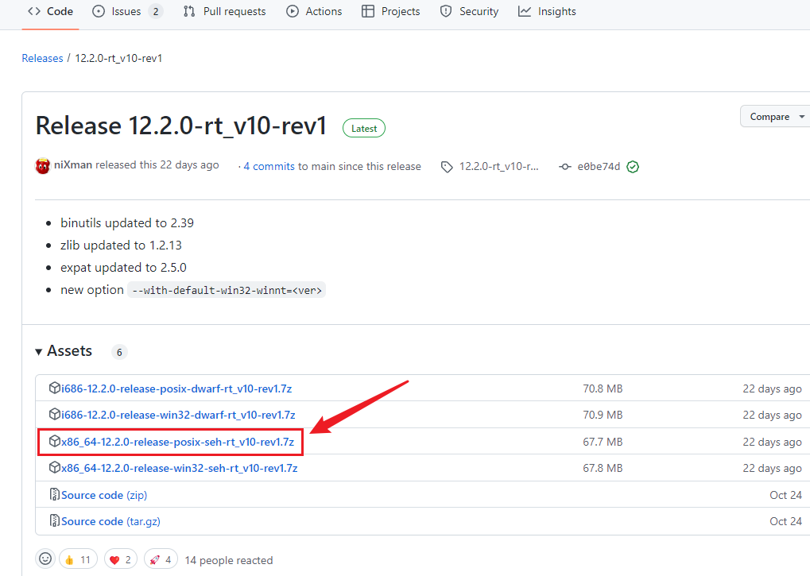
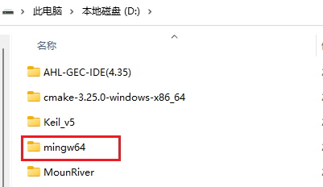
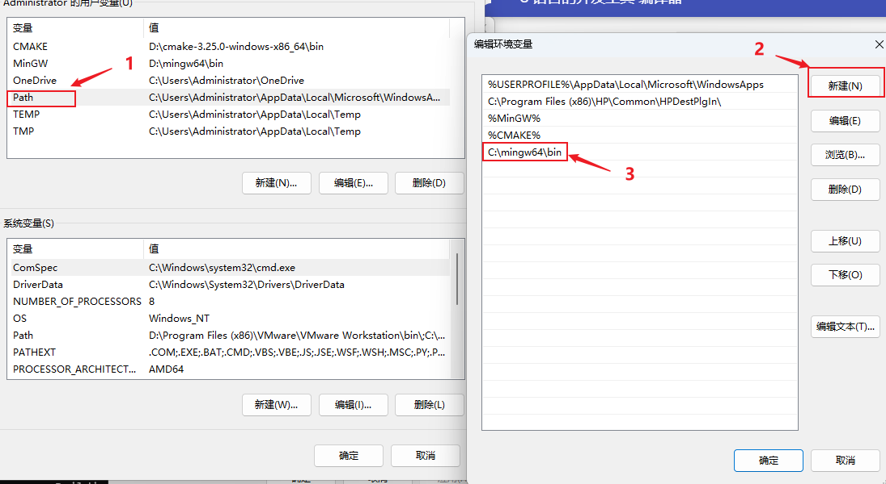
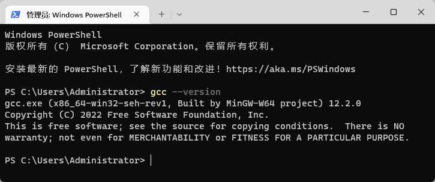

C 语言的开发工具-编译器¶
何为编译器¶
在计算机编程语言中分为两大类，一种是编译型语言，另一种是解释型语言
-
编译型语言
编译型语言如C、C++、Java等，代码写完后需要通过编译器，将用户编写的文本代码，编译为计算机可执行的二进制文件后方可执行。文本代码中的语法错误在编译的时候就会被发现。 -
解释执行型语言
解释执行型语言代码的运行，需要在计算机上安装有解释器，代码实在解释器的解释下，边解释便运行。文本代码中的语法错误只有在运行到的时候才会发现。
C语言的编译器¶
GCC为GNU开发的编程语言编译器，它包括C、C++、Objective-C、Java和Go语言前端，也包括的这些语言的库（如stdlib.h等)。GCC的初衷是为GNU操作系统专门编写的一款编译器。
GCC编译器Windows下安装¶
1.下载压缩包¶
在windows系统下使用MinGW-w64项目提供GCC编译器，我们科研通过MinGW的github页面下载最新安装包，如下图所示： 
这边也可通过共享路径下：GCC下载-TXNAS
2. 解压并配置¶
下载后将压缩包直接解压到电脑中的某个位置，如d:\,目录名中最好不要包含非英文字符和空格

打开电脑的系统属性,在高级系统设置，选择环境变量设置页面
为电脑Path环境变量添加一个新条目，并将上面解压文件夹下的bin路径添加到条目中，如下图地址为D:\mingw64\bin

3.测试运行¶
可以打开windows终端（win+R，输入cmd），在终端中输入gcc --version,如出现一下信息提示则代表安装配置成功。
